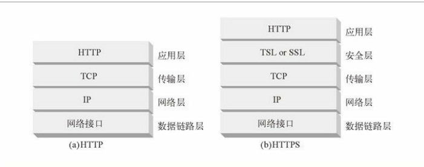
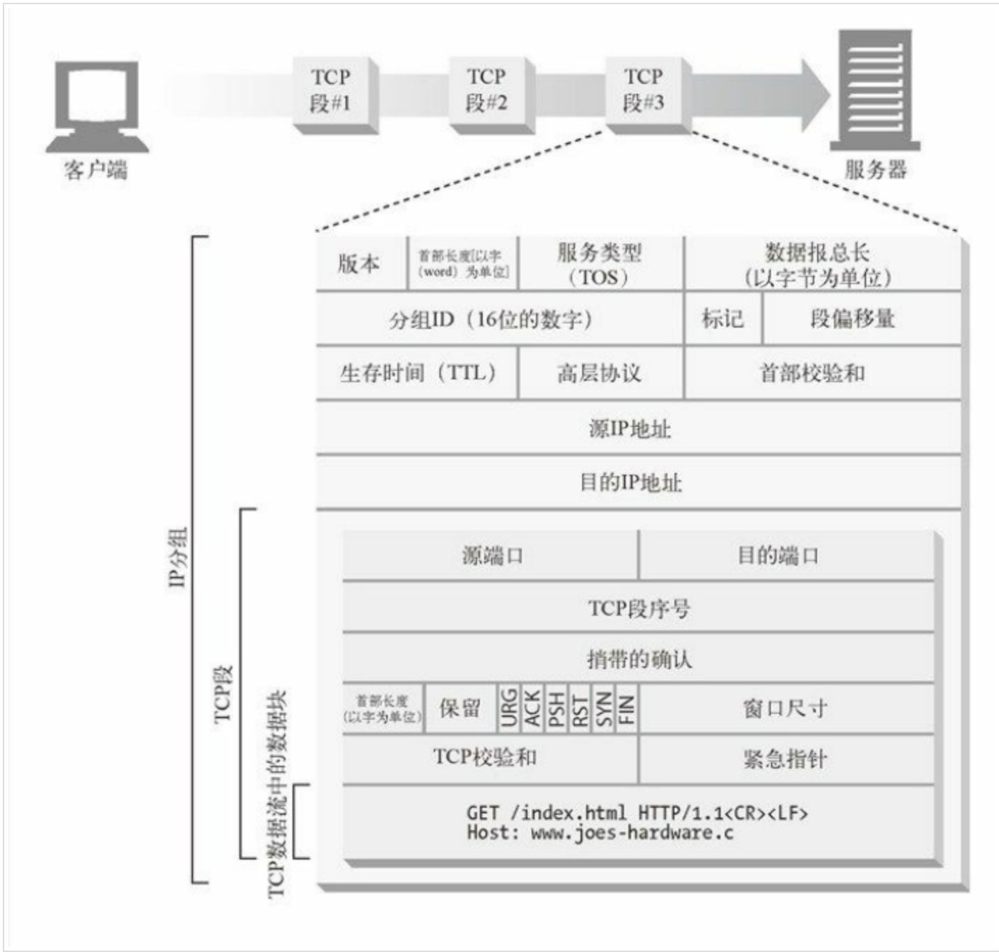
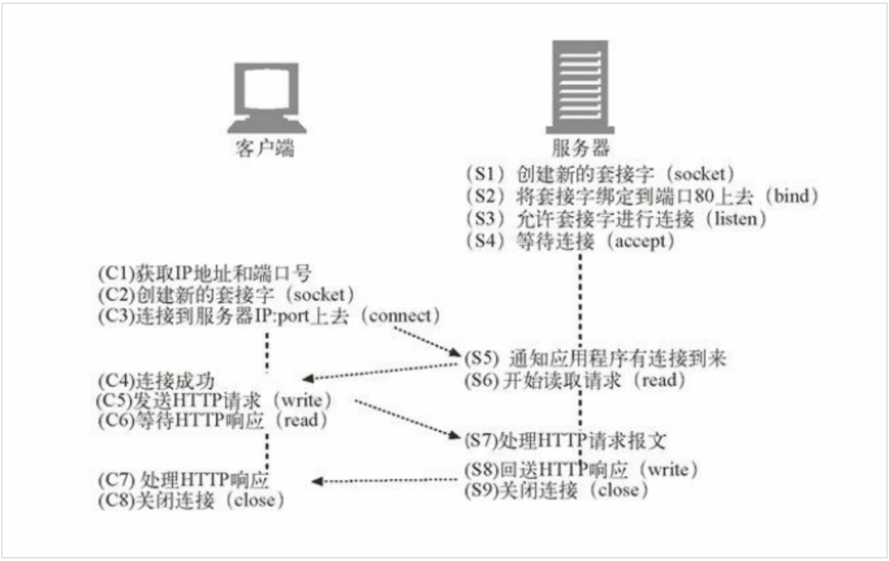
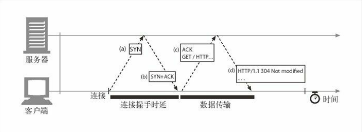
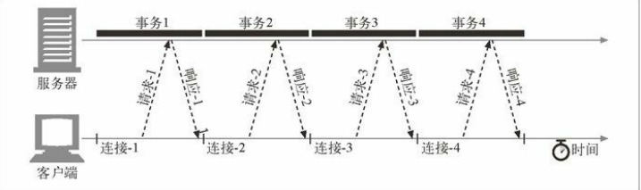
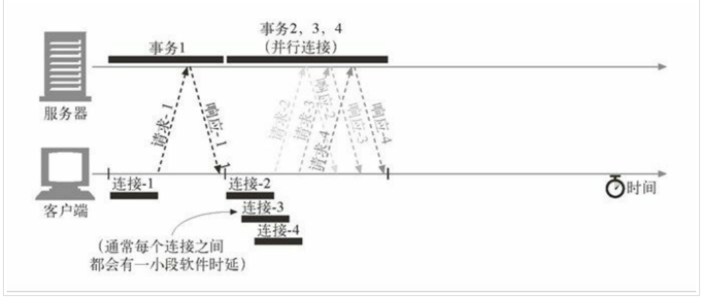

HTTP是如何使用TCP连接
TCP 连接的基本知识
TCP 是可靠的数据管道
TCP 会按序、无差错地承载 HTTP 数据，TCP 为 HTTP 提供了一条可靠的比特传输管道。从 TCP 连接一端填入的字节会从另一端 以原有的顺序、正确地传送出来。
TCP 流是分段的、由 IP 分组传送
TCP 的数据是通过名为 IP 分组（或 IP 数据报）的小数据块来发送的。

这样的话，如图HTTP 就是“HTTP over TCP over IP”这个“协议栈”中的最顶层了。其安全版本 HTTPS 就是在 HTTP 和 TCP 之间插入了一个（称为 TLS 或 SSL 的）密码加密层(安全层)，就是在图中的右半部分。
HTTP 要传送一条报文时，会以流的形式将报文数据的内容通过一条打开的 TCP 连接按 序传输。TCP 收到数据流之后，会将数据流砍成被称作段的小数据块，并将段封装在 IP 分组中，通过因特网进行传输，如下图中大家看到的内容：

每个 TCP 段都是由 IP 分组承载，从一个 IP 地址发送到另一个 IP 地址的。
而每个 IP 分组中都包括：
- 一个 IP 分组首部（通常为 20 字节）；
- 一个 TCP 段首部（通常为 20 字节）；
- 一个 TCP 数据块（0 个或多个字节）。
IP 首部包含了源和目的 IP 地址、长度和其他一些标记。TCP 段的首部包含了 TCP 端口 号、TCP 控制标记，以及用于数据排序和完整性检查的一些数字值。
保持 TCP 连接的持续不间断地运行
在任意时刻计算机都可以有几条 TCP 连接处于打开状态。TCP 是通过端口号来保持所有 这些连接的正确运行的。 端口号和雇员使用的电话分机号很类似。
这就和我之前举得例子是一样的，公司的总机和你自己的座机一样，公司的总机号码能将你接到前台，而分机号 可以将你接到正确的雇员位置一样，IP 地址可以将你连接到正确的计算机，而端口号则 可以将你连接到正确的应用程序上去。TCP 连接是通过 4 个值来识别的：
源IP 地址、源端口号、目的IP 地址、目的端口号
这 4 个值一起唯一地定义了一条连接。两条不同的 TCP 连接不能拥有 4 个完全相同的地 址组件值（但不同连接的部分组件可以拥有相同的值）。
这里需要我们注意的是，有些连接共享了相同的目的端口号，有些连接使用了相同的源 IP 地址，有些使用了相同的目的 IP 地址，但没有两个不同连接所有的 4 个值都一样。
TCP 套接字
操作系统提供了一些操纵其 TCP 连接的工具。为了更具体地说明问题，我们来看一个 TCP 编程接口，这些套接字我就不一一介绍了，我给大家一个表格，大家可以理解一下
套接字API调用描 述s = socket()创建一个新的、未命名、未关联的套接字bind(s,)向套接字赋一个本地端口号和接口connect(s, )创建一条连接本地套接字与远程主机及端口的连接listen(s,…)标识一个本地套接字，使其可以合法接受连接s2 = accept(s)等待某人建立一条到本地端口的连接
套接字 API 允许用户创建 TCP 的端点数据结构，将这些端点与远程服务器的 TCP 端点进 行连接，并对数据流进行读写。TCP API 隐藏了所有底层网络协议的握手细节，以及 TCP 数据流与 IP 分组之间的分段和重装细节。
TCP 客户端和服务器是如何通过 TCP 套接字接口进行通信的

上图中说明了可以怎样通过套接字 API 来凸显客户端和服务器在实现 HTTP 事务时所应执行的步骤。
TCP 连接的握手
TCP 连接握手需要经过以下几个步骤。 如图所示：

- 请求新的 TCP 连接时，客户端要向服务器发送一个小的 TCP 分组（通常是 40 ～ 60 个字节）。这个分组中设置了一个特殊的 SYN 标记，说明这是一个连接请求。
- 如果服务器接受了连接，就会对一些连接参数进行计算，并向客户端回送一个 TCP 分组，这个分组中的 SYN 和 ACK 标记都被置位，说明连接请求已被接受。
- 最后，客户端向服务器回送一条确认信息，通知它连接已成功建立
我们永远不会看到这些分组——这些分组都由 TCP/IP 软件管理，对其是不可见 的。HTTP 程序员看到的只是创建 TCP 连接时存在的时延。
在这里我们需要注意的就是 TCP 连接的握手时延，通常 HTTP 事务都不会交换太多数据，此时，SYN/SYN+ACK 握手（参见图中的 a 段 和图中的 b 段）会产生一个可测量的时延。TCP 连接的 ACK 分组（参见图中的 c 段）通常都足够大，可以承载整个 HTTP 请求报文，而且很多 HTTP 服务器响应报文都可 以放入一个 IP 分组 中去（比如，响应是包含了装饰性图片的小型 HTML 文件，或者是对浏览器高速缓存请求产生的 304 Not Modified 响应）。
TCP 慢启动
TCP 数据传输的性能还取决于 TCP 连接的使用期（age）。TCP 连接会随着时间进行自 我“调谐”，起初会限制连接的最大速度，如果数据成功传输，会随着时间的推移提高传输 的速度。这种调谐被称为 TCP 慢启动（slow start），用于防止因特网的突然过载和拥 塞。
TCP 慢启动限制了一个 TCP 端点在任意时刻可以传输的分组数。简单来说，每成功接收 一个分组，发送端就有了发送另外两个分组的权限。如果某个 HTTP 事务有大量数据要发 送，是不能一次将所有分组都发送出去的。必须发送一个分组，等待确认；然后可以发送 两个分组，每个分组都必须被确认，这样就可以发送四个分组了，以此类推。这种方式被 称为“打开拥塞窗口”。
由于存在这种拥塞控制特性，所以新连接的传输速度会比已经交换过一定量数据的、“已 调谐”连接慢一些。由于已调谐连接要更快一些，所以 HTTP 中有一些可以重用现存连接 的工具。
HTTP 连接的处理
前面我们说了 TCP 连接，我们重新来分析一下 HTTP ，之前我也说过在 HTTP 1.0的时候和1.1之后，有 Keep-Alive ，关于 Keep-Alive 不懂的请翻看前面的公众号的文章内容，接下来我分几个内容给大家讲述 HTTP 对连接上的处理。
- 并行连接1 通过多条 TCP 连接发起并发的 HTTP 请求。
- 持久连接1 重用 TCP 连接，以消除连接及关闭时延。
- 管道化连接1 通过共享的 TCP 连接发起并发的 HTTP 请求。
我们来看一下串行：

每个事务都需要（串行地建立）一条 新的连接，那么连接时延和慢启动时延就会叠加起来
并行连接就是说 HTTP 允许客户端打开多条连接，并行的去执行多个 HTTP 的事务，就会出现多条线路平行的情况。

其实并行连接并没有说是页面的传输速度，是因为多个对象同时在进展，所以，他的速度要比叠加起来，让你在感觉上快不少。
持久连接
HTTP 1.1 允许 HTTP 设备在事务处理结束之后 将 TCP 连接保持在打开状态，以便为未来的 HTTP 请求重用现存的连接。在事务处理结束之后仍然保持在打开状态的 TCP 连接被称为持久连接。非持久连接会在每个事务结束之后关闭。持久连接会在不同事务之间保持打开状态，直到客户端或服务器决定将其关闭为止。
管道化连接(也有人称之为管线化)
HTTP/1.1 允许在持久连接上可选地使用请求管道。这是相对于 keep-alive 连接的又一性能优化。在响应到达之前，可以将多条请求放入队列。当第一条请求通过网络流向地球另一端的服务器时，第二条和第三条请求也可以开始发送了。在高时延网络条件下，这样做可以降低网络的环回时间，提高性能。
其实管道化说白了就是 传送过程中不需先等待服务端的回应，然后又发了几条，浏览器将 HTTP 要求大批提交可大幅缩短页面的加载时间，特别是在传输延迟（lag/latency）较高的情况下（如卫星连接）。此技术之关键在于多个 HTTP 的要求消息可以同时塞入一个 TCP 分组中，所以只提交一个分组即可同时发出多个要求，借此可减少网络上多余的分组并降低线路负载。